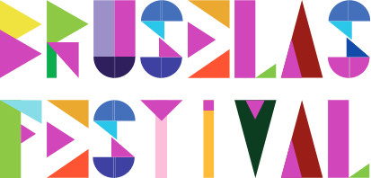

Het logo van "Bruselas Festival" heeft een zuiders karakter. Ook de hoofdkleur #d147bc komt in elke letter terug.
We kiezen voor zwarte, eenvoudige logo's die makkelijk terug te vinden zijn op de webpagina.
RGB rgb(209, 71, 188)
HEX #d147bc
HSL hsl(309, 60%, 55%)
RGB rgb(235, 187, 36)
HEX #ebbb24
HSL hsl(46, 83%, 53%)
RGB rgb(68, 23, 56)
HEX #441738
HSL hsl(316, 49%, 18%)
RGB rgb(173, 61, 32)
HEX #ad3d20
HSL hsl(12, 69%, 40%)
RGB rgb(48, 84, 46)
HEX #30542e
HSL hsl(117, 29%, 25%)
RGB rgb(250, 243, 226)
HEX #faf3e2
HSL hsl(42, 71%, 93%)
We gebruiken Montserrat voor de titels, Lato als gewone tekst.
Eenvoudig de navigatie in 'Montserrat Light 12 pt #30542e', zonder blokjes er rond. De woorden zullen 'Montserrat Light 12 pt #441738' en onderlijnd worden, wanneer we er op klikken.
Eenvoudige, strakke knoppen, beetje afgerond die bij de lay-out van de website passen. Tekst: Montserrat Thin 20 pt #ffffff - Box: #ad3d20 - Border: #ebbb24
De Links zijn #30542e en onderstreept, en krijgen na de klik #ad3d20